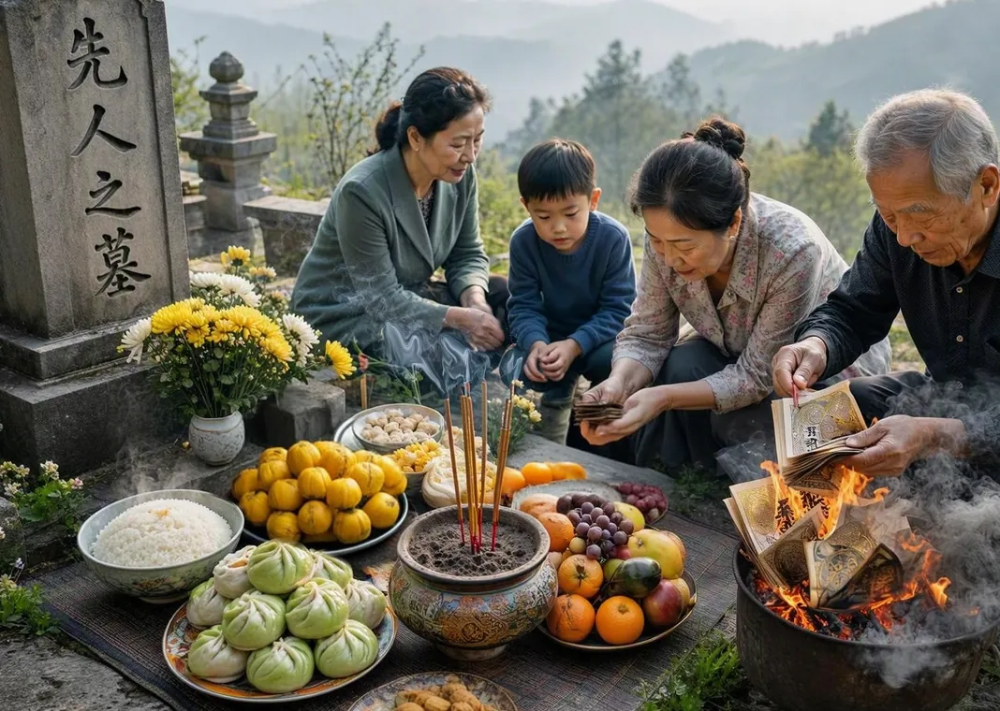
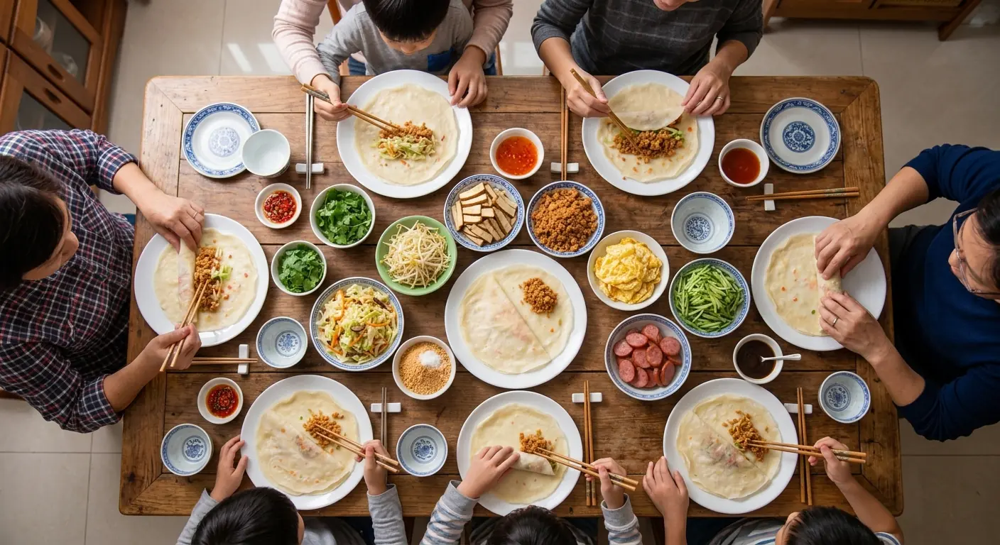

Tomb-Sweeping Day in Taiwan: A Day of Family, Food, and Memories

Tomb-Sweeping Day, known as Qingming Festival, is an important traditional holiday in Taiwan. Families visit the graves of their ancestors, clean them, and remember relatives who have passed away. For many, it's also a chance for a family reunion. When my friend Wei invited me to spend Tomb-Sweeping Day with his family, I wasn't sure what to expect. We left early because the roads were already busy — thousands of families were heading to cemeteries across the island, and the highways were far more crowded than usual.
At the cemetery, families were everywhere, carrying flowers, food, and bags of supplies. First, we cleaned the family grave; pulling weeds, sweeping leaves, and wiping the stone. Wei explained that this work is a way of showing respect for your ancestors.
Then came the food. Wei's family had prepared a large meal — fruit, tea, rice, meat, and more — which was placed in front of the grave as an offering. The spiritual "energy" of the food passes over to the ancestor, whose spiritual world is believed to be a mirror image of the living world, where nourishment, and even money, are still required. Everyone talked, laughed, and shared memories as they worked. One tradition I found especially interesting was burning incense sticks (joss sticks) and special paper money (joss paper) and other paper objects as symbolic gifts, believed to bring comfort or wealth to ancestors in the afterlife. The whole ritual is a way of remembering ancestors while reuniting with our living family.
Later, we went to Wei's aunt's house, where the family had lunch together. There was plenty of food since the food offered to the ancestors had to be eaten. For dinner, we made spring rolls. Spring rolls, or Run-bing, are like a Taiwanese version of a customizable burrito. Unlike a thick Mexican burrito, however, the wrapper is a thin crepe — and you usually need two of them, laid out overlapping on a plate (not stacked).

Once the crepes are laid out, you pile on the ingredients: cabbage, bean sprouts, dried tofu, cucumber, and carrots. The meat is dried pork floss or other styles of pork. Every region and family has its own preferences — you can really add almost anything. The traditional flavorings are peanut powder, sugar powder, and cilantro. Some families add hoisin sauce or a mild, orangish chili sauce (with a ketchup-like consistency).
At the table, everyone gathered to build their own Run-bing, with a little of this and a little of that, a sprinkle of sugar and peanut powder, all rolled up carefully. My first attempt fell apart immediately, to everyone's amusement. The whole family sat together, talking, asking questions, passing plates, in no hurry at all. After a morning of remembering those who had passed, this also felt like a celebration of those still here. Qingming wasn't only about remembering the past; it was also about spending time together in the present with the ones we love.